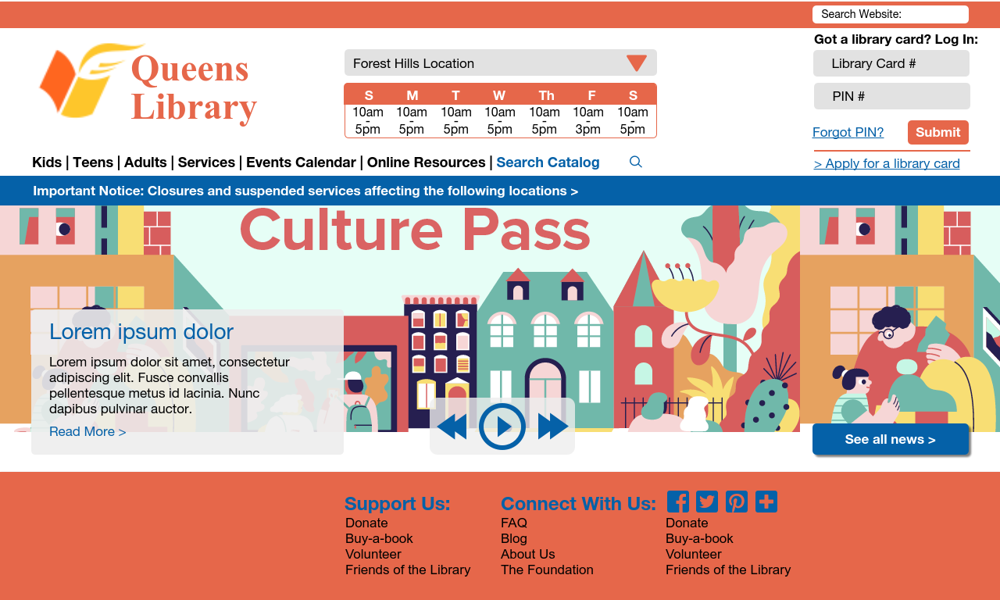

With over 900,000 active borrowers, the QueensLibrary has made a place
for itself in the communities that it serves - offering numerous
community and arts events, career training, and translation services
alongside its more traditional services of lending books and
facilitating research. QueensLibrary's website, however, makes
learning about these events and services rather difficult
and could be much improved in terms of user experience. Since
the website plays a vital role in promoting QueensLibrary and
its services, I decided to do a redesign of the website with a
focus on improving usability and visual appearance.
*2020 Note: This study was done in late 2018, so is about the version
of the library's website up at the time. It looks like the library
has revamped their website since then!
Before starting on my redesign, I took a more in-depth look at the QueensLibrary website. The homepage for the current website looks like this:

While doing so, I identified specific areas for potential improvement.
Intuitive Design:
- Currently, navigation for this website is not very intuitive, as it is very spread out. For example, the homepage alone has three different sections for navigation – one at the top by the logo, one in the middle with brightly colored drop-down menus, and one at the bottom. As can be seen from the links / header examples above, the sections overlap in terms of topic (such as kids programs), so deciding which area to use for navigation and where you are most likely to find what you need isn’t very intuitive.
Ease of Learning:
- One potential difficulty for a new user lies in the search functionality, since to figure out if a library has a certain book, a new user has to perform a search using the search bar on the upper right hand corner. On many websites, however, a search bar in that location performs a search over all of the pages on the site, so a new users looking to search over only the library’s catalog may overlook this feature.
Efficiency: (especially for these common uses)
- Searching: Filtering after performing a search currently requires clicking on links consecutively to narrow down one feature (languages, years, types, etc.) at a time. For example, filtering by language and type would require two page reloads. In addition, the filter options are all listed on a right sidebar, so a user would have to scroll down a lot to get to what they want to filter by.
- Finding hours and locations: Currently, the user has to first find the link to the hours and locations page on one of the navigation areas, and then has to scroll through a long list of all potential hours to find the library that they are looking for.
Having figured out the areas I wanted to improve upon, I then decided to redesign five of the website's pages based on usability guidelines. The pages I chose were the homepage, the search page, the individual library book information page, the user account page, and the kids page, since these five pages together captured enough of the variety of features and services on the library's website. I then opened up Balsamiq to test out various layouts and ways of consolidating the library's information to improve user experience.
Lo-fi wireframes (Usability Redesign):
Intuitive Design / Navigation:
To make navigation more intuitive, I focused the navigation on two main areas: one at the top focusing on the library as most people know it – a source of information and a resource for learning – and one on the bottom focusing on the library as an organization. This focus-based separation allows users to stick to a single, main method of navigation throughout the entire site, rather than having to move / search for what they need between navigation areas and links. Users would now also have a more distinct starting point when searching for a particular page or piece of information. The fewer navigation bars / sections also removes the need for overlapping content.
Learnability:
To improve learnability for new users, I separated the current search feature into two separate features / areas. The search bar on the top right of the page performs searches through website content, while the search in the navigation bar searches through the library's catalog.
Efficiency:
To improve efficiency, I focused my changes on the following common website use cases:
- Filtering after performing a search: Rather than having all of the
options for the filters being presented as links as was originally the case,
I decided to present the options for each filter in drop down menus.
This conserves space, and allows the user to quickly look through all of
the available filter categories (location, language, etc). I also decided
to place all of the results in their own scrollable window within the page
rather than having the entire page scroll, since this would allow users to
be able to quickly reach the filter functionality regardless of where they
are in the search results. Leaving the page scrollable and stickying the
filter section so that it moves down with the page
would work as well.
- Looking for a library's hours: Since this is a very common use case for
the website, I decided to make a separate section for hours at the top of
the website.
- Checking account details: Checking account information
is a frequently used feature (particularly after reserving a book
online), so I decided to include a small snapshot of account information
on the top right of every page. Once logged in, the area will show account
details, allowing users to quickly verify that their book requests have gone
through without having to leave the book information or search page to visit
the account page.
Hi-fi mockup (Visual Redesign):
Once I had the layout, navigation, and general usability figured out, my next step was to redesign the website with a focus on visual appearance. I decided to build my high fidelity mockups using Proto.io.

For my visual redesign, I made several changes. I first used a 6 column vertical grid to improve alignment. I chose 6 columns, since it was small enough to provide structure while still large enough to accommodate my sections / groupings.
I then changed the color palette for the overall website to orange and blue. I chose orange as the main color to match the library’s logo, and blue as the accent color since it was complementary to orange. To improve navigation and to help a user find what they need more quickly, I used blue to draw attention to important areas like closure notices, the search catalog link, and headings.